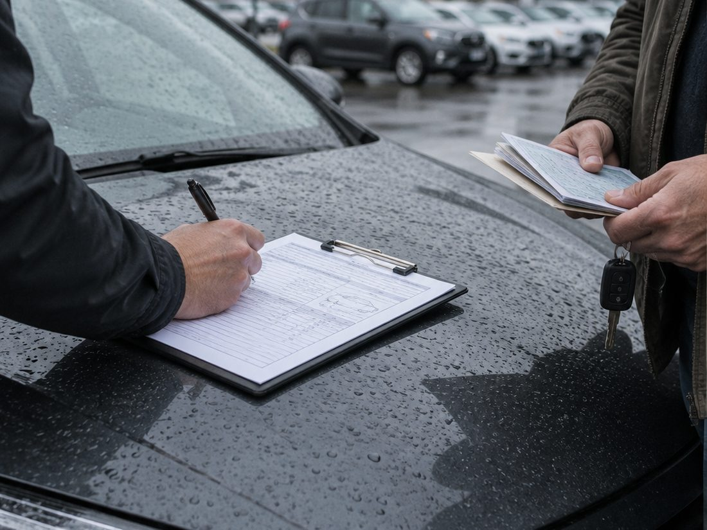

Что проверяю перед покупкой
Четыре блока проверки: кузов, техника, пробег, документы. Каждый пункт — это место, где покупатель теряет деньги, если смотрит машину «на глаз».
Четыре блока проверки
Кузов, техника, пробег, документы. Пропустить один блок — значит купить машину с сюрпризом, который всплывёт через месяц.
Кузов и ЛКП
- Замер толщиномером по каждому элементу: капот, крылья, двери, крыша, пороги
- Поиск шпаклёвки и следов повторной покраски
- Зазоры, геометрия проёмов, следы сварки и замены деталей
- Состояние порогов, арок, днища, скрытых полостей
- Стёкла и фары: год выпуска, маркировка, совпадение с годом авто
- Следы ДТП и ремонта: крепления, герметик, болты, окраска в проёмах
Техника на СТО
- Двигатель: запуск, работа на холодную, шумы, течи, состояние масла
- Коробка: автомат — поведение на переключениях, механика — сцепление
- Подвеска и рулевое: люфты, стуки, состояние рычагов и стоек
- Тормоза: диски, колодки, трубки, работа АБС
- Приводы, ШРУСы, редукторы, состояние пыльников
- Днище, выхлоп, топливные и тормозные магистрали
- Охлаждение и кондиционер: утечки, работа компрессора
Пробег и история
- Износ салона: руль, педали, сиденья, кнопки, подлокотник
- Сверка одометра с данными блоков и сервисной историей
- Признаки смотки и «свежих» перепрошивок
- История обслуживания, если она сохранилась
- Средний пробег в год и его совпадение с заявленным
Документы и чистота
- VIN на кузове, табличке и в документах — совпадение и внешний вид
- Номер двигателя и его соответствие документам
- Ограничения, залоги, аресты, история регистрации
- Количество владельцев и сроки владения
- Сверка комплектации по VIN с тем, что в объявлении
- Проверка на угон и участие в ДТП, если данные доступны

отчёт · документыЧто вы получаете после осмотра
Не «вроде нормальная», а понятный разбор: что с машиной, сколько стоит привести её в порядок и о чём говорить с продавцом.
- Замеры ЛКП по элементам — с цифрами, а не «крашеная дверь»
- Фото проблемных мест: сколы, коррозия, течи, следы ремонта
- Список найденных неисправностей и примерная стоимость ремонта
- Вердикт: брать, торговаться или отказываться
- Аргументы для торга, которые продавцу сложно оспорить
Чего я не делаю
Чтобы не было иллюзий: я не продаю машины, не работаю на продавца и не обещаю идеал.
- Не беру комиссию от продавца или площадки — оплата только от вас, по договору
- Не обещаю «идеальную машину»: б/у автомобиль всегда имеет износ, вопрос в его масштабе
- Не даю гарантию на чужую машину — гарантирую качество своей работы и полноту проверки
- Не тороплю с решением: если вариант плохой, скажу об этом прямо, даже если осмотр уже оплачен
О проверке
Да, и это лучший вариант: вы видите всё своими глазами и сразу задаёте вопросы. Если приехать не можете — присылаю фото и видео с разбором голосом или текстом.
Организую осмотр на подъёмнике сам, если в городе есть такая возможность. Если продавец против подъёмника и диагностики — это уже повод насторожиться.
В большинстве случаев да: кузов, техника, диагностика и документы закрывают основные риски. Разбирать двигатель или коробку никто не будет — но явные проблемы видно и без этого.
Запишите машину на проверку
Пришлите ссылку на объявление и город — скажу, стоит ли ехать на осмотр.
+375 (29) 640-52-70Заявка на автоподбор
Оставьте телефон — перезвоню и уточню детали.